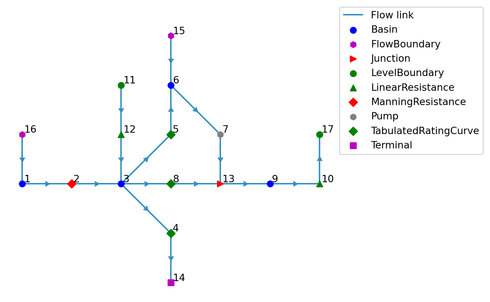
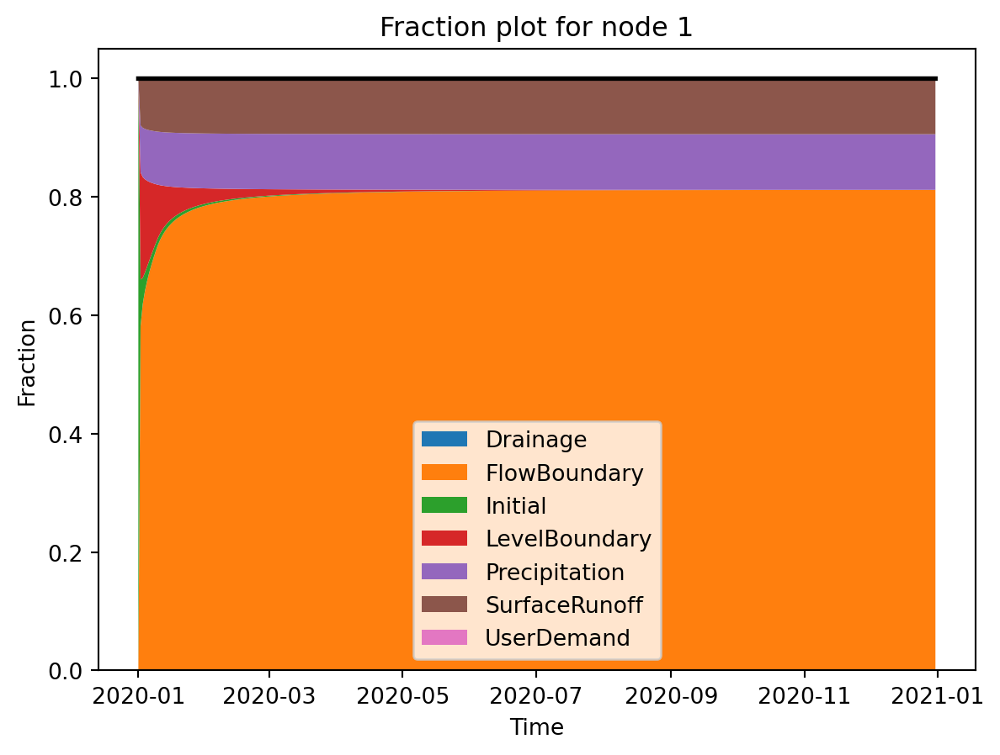
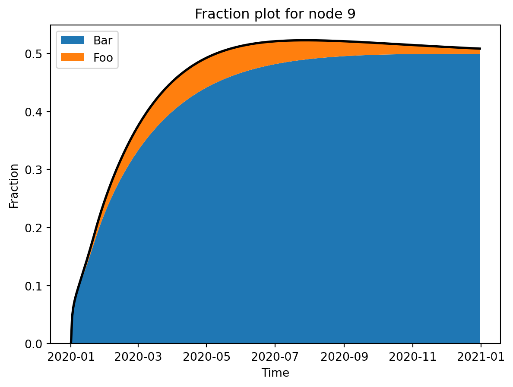

from ribasim import run_ribasimRibasim Delwaq coupling
In order to generate the Delwaq input files, we need a completed Ribasim simulation (typically one with a results folder) that ideally also includes some substances and initial concentrations. Let’s take the basic test model for example, which already has set some initial concentrations.
All testmodels can be downloaded from here.
1 Generating Delwaq input
from pathlib import Path
toml_path = Path("../../generated_testmodels/basic/ribasim.toml")
assert toml_path.is_file()This Ribasim model already has substance concentrations for Cl and Tracer in the input tables, and we will use these to generate the Delwaq input files.
from ribasim import Model
model = Model.read(toml_path)
display(model.basin.concentration_state) # basin initial state
display(model.basin.concentration) # basin boundaries
display(model.flow_boundary.concentration) # flow boundaries
display(model.level_boundary.concentration) # level boundaries
model.plot(); # for later comparisonBasin / concentration_state
| node_id | substance | concentration | |
|---|---|---|---|
| fid | |||
| 0 | 1 | Cl | 0.0 |
| 1 | 3 | Cl | 0.0 |
| 2 | 6 | Cl | 0.0 |
| 3 | 9 | Cl | 0.0 |
Basin / concentration
| node_id | time | substance | drainage | precipitation | surface_runoff | |
|---|---|---|---|---|---|---|
| fid | ||||||
| 0 | 1 | 2020-01-01 | Cl | 0.0 | 0.0 | 0.0 |
| 1 | 1 | 2020-01-02 | Cl | 1.0 | 1.0 | 1.0 |
| 2 | 1 | 2020-01-01 | Tracer | 1.0 | 1.0 | 1.0 |
| 3 | 3 | 2020-01-01 | Cl | 0.0 | 0.0 | 0.0 |
| 4 | 3 | 2020-01-02 | Cl | 1.0 | 1.0 | 1.0 |
| 5 | 3 | 2020-01-01 | Tracer | 1.0 | 1.0 | 1.0 |
| 6 | 6 | 2020-01-01 | Cl | 0.0 | 0.0 | 0.0 |
| 7 | 6 | 2020-01-02 | Cl | 1.0 | 1.0 | 1.0 |
| 8 | 6 | 2020-01-01 | Tracer | 1.0 | 1.0 | 1.0 |
| 9 | 9 | 2020-01-01 | Cl | 0.0 | 0.0 | 0.0 |
| 10 | 9 | 2020-01-02 | Cl | 1.0 | 1.0 | 1.0 |
| 11 | 9 | 2020-01-01 | Tracer | 1.0 | 1.0 | 1.0 |
FlowBoundary / concentration
| node_id | time | substance | concentration | |
|---|---|---|---|---|
| fid | ||||
| 0 | 15 | 2020-01-01 | Cl | 0.0 |
| 1 | 15 | 2020-01-01 | Tracer | 1.0 |
| 2 | 16 | 2020-01-01 | Cl | 0.0 |
| 3 | 16 | 2020-01-01 | Tracer | 1.0 |
LevelBoundary / concentration
| node_id | time | substance | concentration | |
|---|---|---|---|---|
| fid | ||||
| 0 | 11 | 2020-01-01 | Cl | 34.0 |
| 1 | 17 | 2020-01-01 | Cl | 34.0 |

model.basin.profileBasin / profile
| node_id | area | level | storage | |
|---|---|---|---|---|
| fid | ||||
| 0 | 1 | 0.01 | 0.0 | NaN |
| 1 | 1 | 1000.00 | 1.0 | NaN |
| 2 | 3 | 0.01 | 0.0 | NaN |
| 3 | 3 | 1000.00 | 1.0 | NaN |
| 4 | 6 | 0.01 | 0.0 | NaN |
| 5 | 6 | 1000.00 | 1.0 | NaN |
| 6 | 9 | 0.01 | 0.0 | NaN |
| 7 | 9 | 1000.00 | 1.0 | NaN |
Let’s add another tracer to the model, to setup a fraction calculation.
from ribasim.delwaq import add_tracer
add_tracer(model, 11, "Foo")
add_tracer(model, 15, "Bar")
display(model.flow_boundary.concentration) # flow boundaries
display(model.level_boundary.concentration) # flow boundaries
model.write(toml_path)FlowBoundary / concentration
| node_id | time | substance | concentration | |
|---|---|---|---|---|
| fid | ||||
| 0 | 15 | 2020-01-01 | Cl | 0.0 |
| 1 | 15 | 2020-01-01 | Tracer | 1.0 |
| 2 | 16 | 2020-01-01 | Cl | 0.0 |
| 3 | 16 | 2020-01-01 | Tracer | 1.0 |
| 4 | 15 | 2020-01-01 | Bar | 1.0 |
LevelBoundary / concentration
| node_id | time | substance | concentration | |
|---|---|---|---|---|
| fid | ||||
| 0 | 11 | 2020-01-01 | Cl | 34.0 |
| 1 | 17 | 2020-01-01 | Cl | 34.0 |
| 2 | 11 | 2020-01-01 | Foo | 1.0 |
PosixPath('../../generated_testmodels/basic/ribasim.toml')run_ribasim(toml_path)┌ Info: Starting a Ribasim simulation.
│ toml_path = "../../generated_testmodels/basic/ribasim.toml"
│ cli.ribasim_version = "2025.6.0"
│ starttime = 2020-01-01T00:00:00
│ endtime = 2021-01-01T00:00:00
└ threads = 1
┌ Warning: The following experimental features are enabled: concentration
└ @ Ribasim /home/runner/work/Ribasim/Ribasim/core/src/logging.jl:49
Simulating 0%| | ETA: N/A
Simulating 6%|██▎ | ETA: 0:11:01
Simulating 33%|█████████████▎ | ETA: 0:01:22
Simulating 60%|████████████████████████▏ | ETA: 0:00:26
Simulating 88%|███████████████████████████████████▏ | ETA: 0:00:06
Simulating 100%|████████████████████████████████████████| Time: 0:00:40
[ Info: Computation time: 17 seconds, 638 milliseconds
[ Info: The model finished successfully.Given the path to a completed Ribasim simulation, we can call ribasim.delwaq.generate for generating the required input files for Delwaq from scratch. ribasim.delwaq.generate either takes a Model instance, or the path to a toml file, as well as an output_path keyword, where the input for Delwaq will be written. By default it is set to the delwaq folder next to the toml.
from ribasim.delwaq import generate
# The default path is the delwaq folder next to the toml
output_path = Path("../../generated_testmodels/basic/delwaq")
graph, substances = generate(model, output_path)/home/runner/work/Ribasim/Ribasim/python/ribasim/ribasim/delwaq/generate.py:495: SettingWithCopyWarning:
A value is trying to be set on a copy of a slice from a DataFrame.
Try using .loc[row_indexer,col_indexer] = value instead
See the caveats in the documentation: https://pandas.pydata.org/pandas-docs/stable/user_guide/indexing.html#returning-a-view-versus-a-copy
This call produces a handful of files in the user defined folder. Let’s take a look at them:
list(output_path.iterdir())[PosixPath('../../generated_testmodels/basic/delwaq/B5_bounddata.inc'),
PosixPath('../../generated_testmodels/basic/delwaq/ribasim.atr'),
PosixPath('../../generated_testmodels/basic/delwaq/ribasim.vel'),
PosixPath('../../generated_testmodels/basic/delwaq/ribasim.vol'),
PosixPath('../../generated_testmodels/basic/delwaq/delwaq.inp'),
PosixPath('../../generated_testmodels/basic/delwaq/bndlist.csv'),
PosixPath('../../generated_testmodels/basic/delwaq/ribasim.are'),
PosixPath('../../generated_testmodels/basic/delwaq/ribasim.nc'),
PosixPath('../../generated_testmodels/basic/delwaq/ribasim.poi'),
PosixPath('../../generated_testmodels/basic/delwaq/dimr_config.xml'),
PosixPath('../../generated_testmodels/basic/delwaq/ribasim_bndlist.inc'),
PosixPath('../../generated_testmodels/basic/delwaq/ribasim.len'),
PosixPath('../../generated_testmodels/basic/delwaq/ribasim.flo'),
PosixPath('../../generated_testmodels/basic/delwaq/network.csv')]These files form a complete Delwaq simulation, and can be run by either pointing DIMR to the dimr_config.xml file or pointing Delwaq to the delwaq.inp file.
Note that the call to generate produces two output variables; graph and substances that are required for parsing the results of the Delwaq model later on. Nonetheless, we can also inspect them here, and inspect the created Delwaq network.
substances # list of substances, as will be present in the Delwaq netcdf output{'Bar',
'Cl',
'Continuity',
'Drainage',
'FlowBoundary',
'Foo',
'Initial',
'LevelBoundary',
'Precipitation',
'SurfaceRunoff',
'Tracer',
'UserDemand'}As you can see, the complete substances list is a combination of user input (Cl and Tracer in the input tables), a Continuity tracer, and tracers for all nodetypes in the Ribasim model. The latter tracers allow for deeper inspection of the Ribasim model, such as debugging the mass balance by plotting fraction graphs. Let’s inspect the graph next, which is the Delwaq network that was created from the Ribasim model:
import matplotlib.pyplot as plt
import networkx as nx
# Let's draw the graph
fig, ax = plt.subplots(1, 2, figsize=(10, 5))
nx.draw(
graph,
pos={k: v["pos"] for k, v in graph.nodes(data=True)},
with_labels=True,
labels={k: k for k, v in graph.nodes(data=True)},
ax=ax[0],
)
ax[0].set_title("Delwaq node IDs")
nx.draw(
graph,
pos={k: v["pos"] for k, v in graph.nodes(data=True)},
with_labels=True,
labels={k: v["id"] for k, v in graph.nodes(data=True)},
ax=ax[1],
)
ax[1].set_title("Ribasim node IDs")
fig.suptitle("Delwaq network");Here we plotted the Delwaq network twice, with the node IDs as used by Delwaq on the left hand side, and the corresponding Ribasim node IDs on the right hand side. As you can see, the Delwaq network is very similar to the Ribasim network, with some notable changes:
- All non-Basin or non-boundary types are removed (e.g. no more Pumps or TabulatedRatingCurves)
- Basin boundaries are split into separate nodes and links (drainage, precipitation, and evaporation, as indicated by the duplicated Basin IDs on the right hand side)
- All node IDs have been renumbered, with boundaries being negative, and Basins being positive.
2 Parsing the results
With Delwaq having run, we can now parse the results using ribasim.delwaq.parse. This function requires either a path to a toml file, or a Model instance, as well as the graph and substances variables that were output by ribasim.delwaq.generate. You can optionally set the path to the results folder of the Delwaq simulation, if you overrode the default during ribasim.delwaq.generate.
from ribasim.delwaq import parse
nmodel = parse(model, graph, substances)The parsed model is identical to the Ribasim model, with the exception of the added concentration_external table that contains all tracer results from Delwaq.
display(nmodel.basin.concentration_external)
print(substances)
t = nmodel.basin.concentration_external.df
t[t.time == t.time.unique()[2]]Basin / concentration_external
| time | node_id | concentration | substance | |
|---|---|---|---|---|
| fid | ||||
| 0 | 2020-01-01 | 1 | 0.000000 | Precipitation |
| 1464 | 2020-01-01 | 1 | 0.000000 | LevelBoundary |
| 2928 | 2020-01-01 | 1 | 0.000000 | Tracer |
| 4392 | 2020-01-01 | 1 | 0.000000 | Cl |
| 5856 | 2020-01-01 | 1 | 0.000000 | SurfaceRunoff |
| ... | ... | ... | ... | ... |
| 11711 | 2020-12-31 | 9 | 0.999999 | Continuity |
| 13175 | 2020-12-31 | 9 | 0.000000 | Drainage |
| 14639 | 2020-12-31 | 9 | 0.499193 | Bar |
| 16103 | 2020-12-31 | 9 | 0.000000 | UserDemand |
| 17567 | 2020-12-31 | 9 | 0.000088 | Initial |
17568 rows × 4 columns
{'Precipitation', 'LevelBoundary', 'Tracer', 'Cl', 'SurfaceRunoff', 'FlowBoundary', 'Foo', 'Continuity', 'Drainage', 'Bar', 'UserDemand', 'Initial'}| time | node_id | concentration | substance | |
|---|---|---|---|---|
| fid | ||||
| 8 | 2020-01-03 | 1 | 0.083136 | Precipitation |
| 1472 | 2020-01-03 | 1 | 0.170560 | LevelBoundary |
| 2936 | 2020-01-03 | 1 | 0.785120 | Tracer |
| 4400 | 2020-01-03 | 1 | 5.799030 | Cl |
| 5864 | 2020-01-03 | 1 | 0.083136 | SurfaceRunoff |
| 7328 | 2020-01-03 | 1 | 0.618847 | FlowBoundary |
| 8792 | 2020-01-03 | 1 | 0.170560 | Foo |
| 10256 | 2020-01-03 | 1 | 1.000000 | Continuity |
| 11720 | 2020-01-03 | 1 | 0.000000 | Drainage |
| 13184 | 2020-01-03 | 1 | 0.000000 | Bar |
| 14648 | 2020-01-03 | 1 | 0.000000 | UserDemand |
| 16112 | 2020-01-03 | 1 | 0.044320 | Initial |
| 9 | 2020-01-03 | 3 | 0.059426 | Precipitation |
| 1473 | 2020-01-03 | 3 | 0.854525 | LevelBoundary |
| 2937 | 2020-01-03 | 3 | 0.118851 | Tracer |
| 4401 | 2020-01-03 | 3 | 29.053844 | Cl |
| 5865 | 2020-01-03 | 3 | 0.059426 | SurfaceRunoff |
| 7329 | 2020-01-03 | 3 | 0.000000 | FlowBoundary |
| 8793 | 2020-01-03 | 3 | 0.854525 | Foo |
| 10257 | 2020-01-03 | 3 | 1.000000 | Continuity |
| 11721 | 2020-01-03 | 3 | 0.000000 | Drainage |
| 13185 | 2020-01-03 | 3 | 0.000000 | Bar |
| 14649 | 2020-01-03 | 3 | 0.000000 | UserDemand |
| 16113 | 2020-01-03 | 3 | 0.026624 | Initial |
| 10 | 2020-01-03 | 6 | 0.091422 | Precipitation |
| 1474 | 2020-01-03 | 6 | 0.011620 | LevelBoundary |
| 2938 | 2020-01-03 | 6 | 0.965784 | Tracer |
| 4402 | 2020-01-03 | 6 | 0.395092 | Cl |
| 5866 | 2020-01-03 | 6 | 0.091422 | SurfaceRunoff |
| 7330 | 2020-01-03 | 6 | 0.782940 | FlowBoundary |
| 8794 | 2020-01-03 | 6 | 0.011620 | Foo |
| 10258 | 2020-01-03 | 6 | 1.000000 | Continuity |
| 11722 | 2020-01-03 | 6 | 0.000000 | Drainage |
| 13186 | 2020-01-03 | 6 | 0.782940 | Bar |
| 14650 | 2020-01-03 | 6 | 0.000000 | UserDemand |
| 16114 | 2020-01-03 | 6 | 0.022596 | Initial |
| 11 | 2020-01-03 | 9 | 0.015869 | Precipitation |
| 1475 | 2020-01-03 | 9 | 0.898593 | LevelBoundary |
| 2939 | 2020-01-03 | 9 | 0.093076 | Tracer |
| 4403 | 2020-01-03 | 9 | 30.552170 | Cl |
| 5867 | 2020-01-03 | 9 | 0.015869 | SurfaceRunoff |
| 7331 | 2020-01-03 | 9 | 0.061337 | FlowBoundary |
| 8795 | 2020-01-03 | 9 | 0.000696 | Foo |
| 10259 | 2020-01-03 | 9 | 1.000000 | Continuity |
| 11723 | 2020-01-03 | 9 | 0.000000 | Drainage |
| 13187 | 2020-01-03 | 9 | 0.061337 | Bar |
| 14651 | 2020-01-03 | 9 | 0.000000 | UserDemand |
| 16115 | 2020-01-03 | 9 | 0.008330 | Initial |
We can use this table to plot the results of the Delwaq model, both spatially as over time.
from ribasim.delwaq import plot_fraction
plot_fraction(nmodel, 1) # default tracers, should add up to 1
plot_fraction(nmodel, 9, ["Foo", "Bar"]) # custom tracers
plot_fraction(nmodel, 9, ["Continuity"]) # mass balance check

from ribasim.delwaq import plot_spatial
plot_spatial(nmodel, "Bar")
plot_spatial(nmodel, "Foo", versus="Bar")